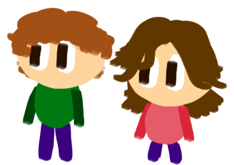

Entwickelt von Leonie Schmidt und Phillip Stephan :)
ÜBER UNS
Wir sind Leonie Schmidt und Phillip Stephan vom Tilesius-Gymnasium in Mühlhausen Thüringen.
Wir haben diese Seite im Namen des Informatik-Unterrichts entwickelt.
Hierbei war die Idee, eine Seite zu entwickeln, welche verschiedene Graphen darstellen kann.
In frühen Entwicklungen haben wir uns nämlich mit dem Canvas-Element in HTML und JS befasst.
Bei dem Kennenlernen des Canvas-Elements haben wir festgestellt, dass dieses fast wie ein Koordinatensystem funktioniert. Nur, dass die y-Achse invertiert war.
So hat es nicht lange gedauert, bis wir mithilfe von Schleifen Graphen zeichnen konnten und dies haben wir hier umgesetzt. Durch verschiedenes weiteres Ausprobieren sind wir also so weit gekommen,
dass man verschiedene Graphtypen zeichnen konnte. Nun brauchten wir also neue Ideen. Hier dachten wir uns, da es ja ein Taschenrechner werden sollte, dass wir verschiedene Rechenprozesse integrieren sollten.
Hier kamen uns Ideen über Ableitungen, Nullstellen etc.. Da wir aber keine Programme aus dem Internet kopieren wollten, sind die Quellcodes sehr lang und warscheinlich sehr unübersichtlich und kompliziert geworden.
Leider hatten wir nicht genug Zeit, um den Rechner der Startseite selbst zu programmieren. Hier wurde Inspiration aus dem Internet verwendet und diese auf unseren Taschenrechner aus CSS angewendet.
An verschiedenen Funktionstypen, wie z. B. der kubischen Funktion sind Formeln für Nullstellen z. B. so kompliziert, dass es sehr aufwendig wäre, diese in Javascript zu integrieren. Deshalb haben wir diese außerdem herausgelassen.
Nun also mindestens weitere 20 Stunden beim Umgehen mit CSS und die Seite begann Form anzunehmen. Weitere Besonderheiten an unserer Seite wären das Menü, welches bei kleinerer Fenstergröße den Mobil-Modus unterstützt, und der Bright-/Darkmode, welcher die Seite hell und dunkel macht.
Nun ist unsere Seite fertig. Trotzdem könnte man noch sehr viele Features hinzufügen.